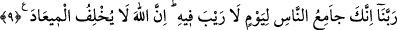

rastlanmamıştır. Nitekim müfessirler hece harfleri gibi müteşâbihâtın açıklamasını
yapmaya çalışmışlardır.
Râsih âlimler, “Biz muhkemin de, müteşâbihin de rabbimizin katından olduğuna îman
ettik” derler. Her ikisi de Allah tarafından indirilmiştir. İkisi arasında herhangi bir
çelişki veya tutarsızlık yoktur.
“Bunları ince idrâk sahiplerinden başkası (lâyıkıyla) düşünüp öğüt almazlar.” Yani
müteşâbihi “ülü’l-elbâb”dan başkası anlamaz. “Ülü’l-elbâb” eğri düşüncelere
sapmayan ve baktığını net gören berrak akıl sahipleri demektir.
Bu âyette, râsih âlimlerin medhi vardır. Onların zihinlerindeki duruluk, görüşlerindeki
güzellik Allah tarafından takdire şayan bulunmuştur. Ayrıca bu âyette râsih âlimlerin
akıllarının his perdelerinden sıyrılmış olması sebebiyle âyetlerin doğru te’vîline
ulaşmaya istidadlı olduklarına da işaret vardır. Râsih âlimler şöyle derler:
8. (Onlar şöyle yakarırlar:) Rabbimiz! Bizi doğru yola ilettikten sonra
kalplerimizi eğriltme. Bize tarafından rahmet bağışla. Lütfu en bol olan sensin.
Yâ Rabbi bizi, müteşâbihin seni hoşnûd etmeyecek bir te’vîline saplanarak doğru
yoldan ayrılanlardan kılma.
“Ve bize kendi tarafından bir rahmetle muamele et!” Bu öyle bir rahmet olsun ki,
bizi sana yaklaştırsın ve kurtuluşa erdirsin.
“Şüphesiz lütfu en çok olan sensin.” İstemeden verensin. Verilen ne varsa hepsini
veren sensin.”
Bu âyet-i celîle, hidâyet ve dalâletin Allah tarafından olduğuna da delâlet eder. Allah,
kullarına ne nîmet vermiş ise, hepsini bir lütuf olarak vermiştir. O hiçbir şeyi vermek
zorunda değildir.
9. Rabbimiz! Gelmesinde şüphe edilmeyen bir günde, insanları mutlaka
toplayacak olan sensin. Allah asla sözünden dönmez.
Bu ifade ile, Allah’ın rahmetine kulların kayıtsız ve şartsız muhtaç oldukları yine
O’nun tarafından gösterilmektedir. Çünkü bir kul için en büyük gaye, Allah’ın rahmetine
nâil olmaktır.
“Şüphesiz ki Allah sözünden caymaz,” verdiği sözü tutar. Çünkü verilen sözü yerine
getirmemek ulûhiyete muhâliftir. Allah, kullarını ölümlerinden sonra dirilteceğine ve